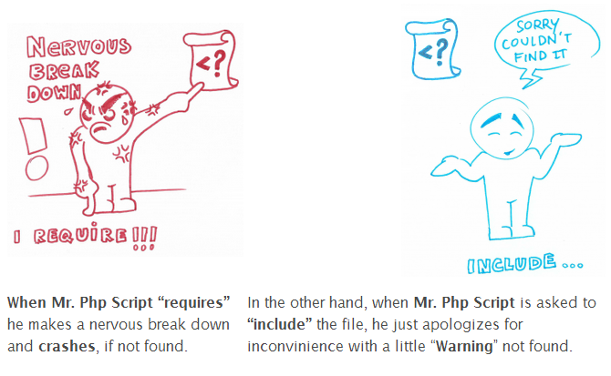

Hergebruik van bestanden
In PHP worden include en require gebruikt om externe bestanden in te laden, wat helpt bij het hergebruiken van code en het beter structureren van projecten.
Het verschil tussen de twee zit in hoe ze omgaan met fouten.

Include
include zal bij een fout, zoals een ontbrekend bestand, een waarschuwing geven maar het script verder laten uitvoeren.
Dit is handig als de ingeladen code niet essentieel is voor het functioneren van de pagina.
Als je achter include _once plaatst dan zal dit document maar één keer geladen worden, zo voorkom je dubbele code.
Voorbeeld: include( ‘../views/footer.php’ );
Require
require daarentegen, zal bij een fout een fatale foutmelding geven en de uitvoering van het script volledig stoppen, omdat de ingeladen code als cruciaal wordt beschouwd.
Dit is handig als de ingeladen code essentieel is voor het functioneren van de website.
Als je achter require _once plaatst dan zal dit document maar één keer geladen worden, zo voorkom je dubbele code.
Voorbeeld: require_once( ‘../views/data.php’ );
DRY
Binnen de software ontwikkeling werken wij volgens het DRY principe, dit betekent dat je zo min mogelijk dubbel werk doet.
De afkorting staat voor:
Dont
Repeat
Yourself
1- Views
Maak buiten de public folder een map aan en noem deze views.
Deze folder is niet te benaderen vanuit de browser, en zal straks verschillende views ( weergave ) bestanden gaan bevatten.
2- Zoek duplicate code
Bekijk nu de 3 php bestanden in jouw code en zoek stukken code die regelmatig voorkomt.
Plaats deze code in een nieuw bestand in de views folder. ( knip en plak ) Ik maak bijvoorbeeld een navigation.php bestand aan en plaats daar mijn menu in.
Zie bijvoorbeeld dit bestand: navigation.php
Herhaal dit ook met de header en de footer.
3- Laad de externe code
Plaats nu op de plek waar je de code hebt geknipt een include, include_once, require of een require_once om ervoor te zorgen dat dee nieuwe code geladen wordt.
Maak zelf een keuze wat je het beste kunt gebruiken.
Testen
Controleer nu of het resultaat is zoals je verwacht.
Ga naar jouw website en klik rond om te zien of er geen onverwachte resultaten zijn.
Maak eventueel aanpassingen als dat nodig is.
Commit en push
Commit en push ALTIJD na het maken van een opdracht of aan het einde van de les. Zo is je voortgang zichtbaar en ontvang je feedback en/of hulp op de laatste versie van je code als dat nodig is.